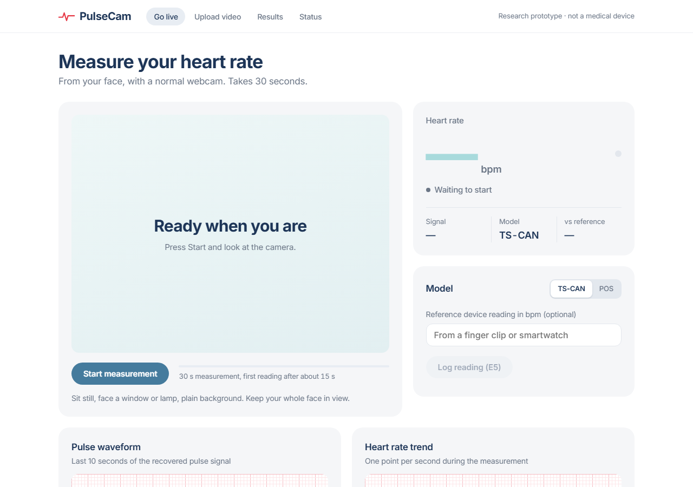
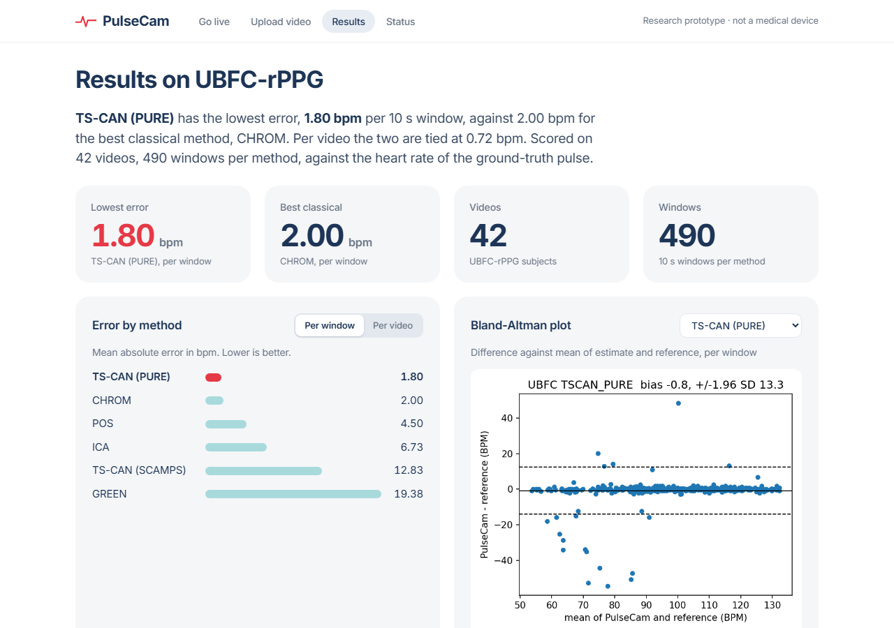
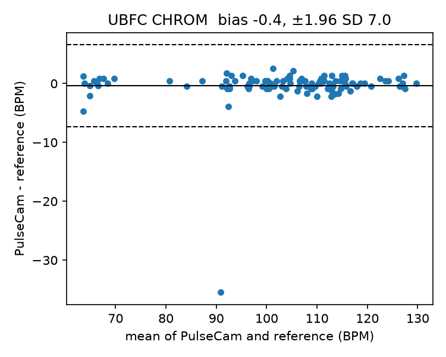
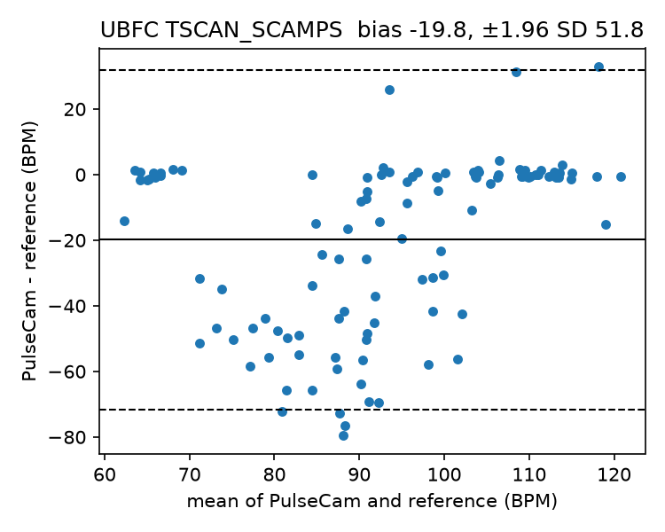

Shri Ramswaroop Memorial University
PROJECT-II (UCS7702PJ)
Project Report
PulseCam
Contactless Heart-Rate and Pulse-Waveform Estimation from Webcam Face Video using Deep Learning (rPPG)
Submitted in partial fulfilment of the requirements of PROJECT-II (UCS7702PJ), B.Tech Computer Science (Data Science and Artificial Intelligence), Semester VII
| Submitted by |
|---|
| 1. | Ruchi Singh | 202310101150025 |
| 2. | Aryan Singh | 202310101150038 |
| 3. | Ananya Dwivedi | 202310101150039 |
| Course | B.Tech CS (DS + AI) |
| Semester | VII |
| Group | 71, 72 |
| Subject | PROJECT-II (UCS7702PJ) |
| Faculty guide | Er. Arun Maurya |
| Date | November 2026 |
Research prototype. PulseCam is not a medical device and must not be used for diagnosis or treatment decisions.
Certificate
This is to certify that the project report entitled “PulseCam: Contactless Heart-Rate and Pulse-Waveform Estimation from Webcam Face Video using Deep Learning (rPPG)” is a record of the project work carried out by Ruchi Singh (202310101150025), Aryan Singh (202310101150038) and Ananya Dwivedi (202310101150039), Groups 71 and 72, B.Tech CS (DS + AI), Semester VII, for PROJECT-II (UCS7702PJ) at Shri Ramswaroop Memorial University, under the guidance of Er. Arun Maurya.
Faculty guide
Er. Arun Maurya | Head of Department |
Declaration
We hereby declare that this project report is our own work. The results reported here were produced by the code in our project repository. Where we use the released models and datasets of other researchers (rPPG-Toolbox, UBFC-rPPG, PURE, SCAMPS), they are cited in the references. Experiments that could not be completed because they need volunteer recordings are marked as not done, and no results are claimed for them.
Ruchi Singh
202310101150025 | Aryan Singh
202310101150038 | Ananya Dwivedi
202310101150039 |
Acknowledgement
We thank our faculty guide, Er. Arun Maurya, for his guidance during this project, and Shri Ramswaroop Memorial University for the opportunity to carry it out as part of PROJECT-II. We are grateful to the researchers who made their work openly available: the authors of the UBFC-rPPG, PURE and SCAMPS datasets and of the rPPG-Toolbox, on which our evaluation is built. The project uses only free and open-source tools, which made it possible to complete it with no budget.
Abstract
PulseCam estimates a person's resting heart rate (beats per minute, BPM) and pulse waveform from ordinary webcam video of the face, in real time and without touching the person. It uses remote photoplethysmography (rPPG): each heartbeat slightly changes how much light the facial skin absorbs, and a 30 fps camera can record this small periodic colour change. The system detects the face with MediaPipe, extracts skin regions or a 72 × 72 face crop, passes the video through a classical method (POS) or the TS-CAN deep network, band-pass filters the result to 0.7–3.0 Hz and reads the heart rate from the strongest frequency, HR = 60 · fpeak.
We compared GREEN, ICA, CHROM, POS and TS-CAN on all 42 subjects of the public UBFC-rPPG dataset (490 ten-second windows per method) and tested cross-dataset transfer with TS-CAN weights trained on PURE and on synthetic SCAMPS data. TS-CAN trained on PURE reached a mean absolute error (MAE) of 1.80 BPM against 2.00 BPM for the best classical method, CHROM, meeting the target of under 5 BPM; the same network trained on SCAMPS reached only 12.83 BPM. A person-wise fine-tuning study on UBFC gave no meaningful gain (1.58 vs 1.60 BPM on six unseen people). A local web application offers a 30-second live measurement and a video-upload mode. Experiments on robustness and skin tone (E3–E5) are fully designed but were not run, because they need volunteer recordings, consent forms and a reference device that were not collected; no results are claimed for them.
Keywords: remote photoplethysmography, heart rate, TS-CAN, deep learning, computer vision, skin-tone fairness, UBFC-rPPG.
Contents
- 1. Introduction9
- 1.1 Background9
- 1.2 Problem Statement9
- 1.3 Motivation9
- 1.4 Objectives9
- 1.5 Research Questions10
- 1.6 Scope10
- 1.7 Organisation of the Report10
- 2. Literature Review11
- 2.1 Remote Photoplethysmography11
- 2.2 Classical Methods11
- 2.3 Deep-Learning Methods11
- 2.4 Datasets11
- 2.5 The rPPG-Toolbox12
- 2.6 Skin-Tone Fairness12
- 2.7 Research Gap12
- 3. System Analysis and Requirements13
- 3.1 Users and Use Cases13
- 3.2 Functional Requirements13
- 3.3 Non-Functional Requirements13
- 3.4 Hardware and Software Requirements14
- 3.5 Feasibility14
- 4. Theory and Methodology15
- 4.1 Signal Model15
- 4.2 The POS Algorithm15
- 4.3 The TS-CAN Network15
- 4.4 Band-Pass Filter and Heart-Rate Estimate15
- 4.5 Signal Quality16
- 4.6 Processing Pipeline16
- 4.7 Face Detection and Skin Regions16
- 4.8 Live Tracker16
- 4.9 Training and Evaluation Protocol17
- 4.10 Experiments17
- 4.11 Evaluation Metrics17
- 5. System Design19
- 5.1 Architecture19
- 5.2 Module Design19
- 5.3 Live Measurement Flow20
- 5.4 Interfaces20
- 5.5 Data Design20
- 5.6 User Interface Design21
- 6. Implementation23
- 6.1 Development Environment23
- 6.2 Face Module23
- 6.3 Signal Processing23
- 6.4 TS-CAN Wrapper23
- 6.5 Heart-Rate Tracker24
- 6.6 Web Server24
- 6.7 Front End24
- 6.8 Evaluation Scripts25
- 6.9 Toolbox Patch and Fine-Tuning25
- 6.10 Problems Met and How They Were Solved25
- 7. Experiments and Results27
- 7.1 Experimental Setup27
- 7.2 E1 and E2: Methods on UBFC-rPPG27
- 7.3 Agreement with the Reference (Bland–Altman)28
- 7.4 Answer to RQ1: Deep versus Classical29
- 7.5 Answer to RQ2: Cross-Dataset Transfer29
- 7.6 Fine-Tuning on UBFC29
- 7.7 Experiments Not Run: E3, E4 and E530
- 7.8 Summary Against the Team Targets30
- 8. Testing and Validation31
- 8.1 Unit Tests31
- 8.2 Integration and System Tests31
- 8.3 Performance Measurements32
- 8.4 What Has Not Been Tested32
- 9. Ethics, Data Collection and Limitations33
- 9.1 Ethics and Privacy33
- 9.2 Planned Data Collection33
- 9.3 Limitations34
- 10. Conclusion and Future Scope35
- 10.1 Conclusion35
- 10.2 Contributions35
- 10.3 Lessons Learned35
- 10.4 Future Scope36
- References37
- Appendix A. User Manual38
- A.1 Starting the application38
- A.2 Measuring your heart rate38
- A.3 Analysing a recorded video38
- A.4 Results and Status tabs38
- Appendix B. Commands to Reproduce the Results39
- Appendix C. Repository Layout40
- Appendix D. Project Timeline41
- Appendix E. Glossary42
- Appendix F. Per-Subject Results on UBFC-rPPG43
- Appendix G. Selected Source Code45
- G.1 pulsecam/signal.py45
- G.2 pulsecam/tscan.py46
List of Figures
- Figure 1. PulseCam processing pipeline.16
- Figure 2. Architecture of the local web application.19
- Figure 3. The web application: the Go live tab before a measurement (top) and the Results tab with the E1/E2 summary and a Bland–Altman plot (bottom).22
- Figure 4. The Upload video tab (left) and the Status tab with the project checklist (right).25
- Figure 5. Window MAE (BPM) of every method on UBFC-rPPG (lower is better).27
- Figure 6. Bland–Altman plots on UBFC-rPPG (490 windows each): GREEN and ICA (top), CHROM and POS (middle), TS-CAN trained on PURE and on SCAMPS (bottom).29
List of Tables
- Table 1. Research questions and the experiments that answer them.10
- Table 2. Classical rPPG methods used in this project.11
- Table 3. Public rPPG datasets relevant to this project.12
- Table 4. Functional requirements.13
- Table 5. Non-functional requirements.14
- Table 6. Hardware and software.14
- Table 7. Skin regions of interest (fractions of the face box width w and height h).16
- Table 8. Quality warnings of the live tracker.17
- Table 9. Experiments E1–E5.17
- Table 10. Modules and their responsibilities.20
- Table 11. Server endpoints.20
- Table 12. Main data files.21
- Table 13. Engineering problems and their solutions.26
- Table 14. E1/E2 on UBFC-rPPG, 42 subjects, 490 ten-second windows per method (MAE, RMSE, MAPE and Pearson per window).27
- Table 15. SCAMPS scoring investigation (MAE in BPM, 42 subjects).29
- Table 16. Fine-tuning on UBFC, scored on 6 unseen test people.30
- Table 17. Results against the project targets.30
- Table 18. Automated tests (pytest); all 6 pass.31
- Table 19. Integration and system tests.32
- Table 20. Performance measurements.32
- Table 21. The four clips recorded per volunteer.33
- Table 22. Answers to the research questions.35
- Table 23. Project timeline and status.41
- Table 24. Window MAE (BPM) per UBFC-rPPG subject and method; Ref. HR is the subject's mean reference heart rate (BPM).44
1. Introduction
1.1 Background
Heart rate is one of the most basic vital signs. It is normally measured by contact: a finger-clip pulse oximeter, a chest strap or a smartwatch. Contact sensors are inconvenient for long monitoring, for infants and for tele-consultation, where only a camera is available. Remote photoplethysmography (rPPG) removes the sensor: the pulse is recovered from the tiny colour changes of the skin in an ordinary video.
With every heartbeat the volume of blood in the small vessels under the skin rises and falls. Haemoglobin absorbs light, and it absorbs green light most strongly, so more blood means slightly less reflected light. The average colour of the face therefore oscillates by a fraction of a percent at the heart rate, which at rest lies between about 0.7 Hz and 3.0 Hz (42–180 BPM). A camera recording 30 frames per second samples this signal comfortably above the Nyquist rate.
1.2 Problem Statement
To design, implement and evaluate a low-cost, camera-only system that estimates resting heart rate and pulse waveform from live face video with an error below 5 BPM on still, well-lit clips, and to find out how its accuracy changes with movement, talking, dim light and skin tone, using only free software and a standard webcam (budget ₹0).
1.3 Motivation
- Convenience: no sensor to wear, charge or sterilise; a laptop webcam or phone camera is enough.
- Tele-health and wellness: a quick resting heart-rate check during a video call, as a wellness indicator and not as a diagnosis.
- Fairness: public rPPG datasets are dominated by lighter skin tones, and melanin-rich skin gives a weaker signal because melanin absorbs part of the light. How well rPPG works for Indian users is therefore not well tested.
- Learning value: rPPG combines computer vision, signal processing and deep learning in one end-to-end project.
1.4 Objectives
- Build an end-to-end video → heart-rate pipeline (face detection, skin regions, model, filtering, frequency analysis).
- Compare classical and deep rPPG methods on a public benchmark.
- Measure how conditions (still, head movement, talking, dim light) affect accuracy.
- Measure accuracy across skin tones (Monk Skin Tone scale) and test whether fine-tuning on own recordings helps.
- Deliver a live demo that runs locally from one command.
1.5 Research Questions
| RQ | Question | Experiment |
|---|
| RQ1 | Does a deep model beat the classical baselines (GREEN, ICA, CHROM, POS) on UBFC-rPPG? | E1 |
| RQ2 | How much does accuracy drop when the model is trained on one dataset (PURE or SCAMPS) and tested on another (UBFC)? | E2 |
| RQ3 | Is accuracy lower for darker skin tones, and does fine-tuning on own recordings reduce the gap? | E4 |
| RQ4 | Which condition (movement, talking, dim light) hurts accuracy most? | E3 |
Table 1. Research questions and the experiments that answer them.
1.6 Scope
In scope: resting heart rate (BPM) and pulse waveform of one frontal face in indoor light; 30 fps webcam or video file, processed locally on a laptop; comparison of methods on UBFC-rPPG; own volunteer tests (planned).
Out of scope: blood pressure, SpO2, arrhythmia detection or any other diagnosis; any clinical or medical use; multiple faces in one frame; exercise or heart rates outside 42–180 BPM; cloud processing.
1.7 Organisation of the Report
Chapter 2 reviews the literature. Chapter 3 states the requirements and feasibility. Chapter 4 explains the signal theory and the methodology. Chapter 5 presents the system design and Chapter 6 the implementation, including the engineering problems met. Chapter 7 reports the experiments and results, Chapter 8 the testing, Chapter 9 ethics, data collection and limitations, and Chapter 10 the conclusion and future scope. The appendices give a user manual, the commands to reproduce the results, the repository layout, the project timeline, a glossary, the results for every UBFC-rPPG subject and the core signal-processing and model code.
2. Literature Review
2.1 Remote Photoplethysmography
Photoplethysmography (PPG) measures blood-volume changes with light; a finger clip shines light through the fingertip and records how much comes out. Verkruysse et al. (2008) showed that the same effect can be seen with ordinary ambient light and a consumer camera, which started the field of rPPG. The pulse signal is tiny compared with everything else that changes the face colour in a video: head movement, speech, changing room light, camera auto-exposure and video compression. All rPPG methods are ways to recover the pulse while suppressing these disturbances.
2.2 Classical Methods
| Method | Key idea |
|---|
| GREEN | Band-pass the mean green channel of the face (Verkruysse et al., 2008). Simple, but with no handling of motion or lighting. |
| ICA | Independent component analysis separates the R, G, B traces into independent sources and picks the one with the clearest pulse peak (Poh et al., 2010). |
| CHROM | A fixed chrominance combination of R, G, B designed to cancel specular reflection and motion (de Haan and Jeanne, 2013). |
| POS | Plane-Orthogonal-to-Skin: projects the normalised colour onto the plane orthogonal to the skin-tone vector, which is more robust to motion; the usual strong classical baseline (Wang et al., 2017). |
Table 2. Classical rPPG methods used in this project.
2.3 Deep-Learning Methods
Deep methods learn the mapping from pixels to pulse end-to-end. DeepPhys (Chen and McDuff, 2018) introduced an attention-based convolutional network that uses frame differences as the motion representation. PhysNet (Yu et al., 2019) uses 3-D convolutions over a video clip to predict the waveform. TS-CAN (Liu et al., 2020) is the efficient temporal-shift variant used in PulseCam: it takes 72 × 72 normalised-difference frames, shifts part of the feature channels in time so that a 2-D network can model time at almost no extra cost, and predicts the derivative of the pulse. PhysFormer (Yu et al., 2022) replaces the convolutional backbone with a transformer.
2.4 Datasets
| Dataset | Type | Description |
|---|
| UBFC-rPPG | Real | 42 short videos of seated, mostly still people in indoor light, with finger-clip PPG ground truth (Bobbia et al., 2019). |
| PURE | Real | Videos of people performing controlled head-motion tasks (Stricker et al., 2014). |
| SCAMPS | Synthetic | A large dataset of avatars rendered with a simulated pulse (McDuff et al., 2022). |
Table 3. Public rPPG datasets relevant to this project.
2.5 The rPPG-Toolbox
The rPPG-Toolbox (Liu et al., 2023) provides consistent implementations of the classical methods and of several deep models, data loaders for the public datasets, released model checkpoints and evaluation code. PulseCam follows the rule “prefer existing toolbox components over new code”: the TS-CAN network class, the released PURE and SCAMPS checkpoints and the classical baselines (GREEN, ICA, CHROM) come from the toolbox, while the face pipeline, evaluation scripts and web application are our own.
2.6 Skin-Tone Fairness
Fairness is a known open problem in rPPG. Public datasets contain mostly lighter-skinned volunteers, and the pulse amplitude is smaller in melanin-rich skin. The Monk Skin Tone scale (10 shades, developed for fairness evaluation) is used in this project to group volunteers for experiment E4.
2.7 Research Gap
Published results are mostly reported on lighter-skinned subjects in controlled conditions. There is little evidence for Indian users, for webcams in everyday conditions, or for running such a system on a student laptop without a GPU. PulseCam builds the complete pipeline, evaluates it honestly on the public benchmark, and prepares the protocol and tools needed to test the open questions with volunteers.
3. System Analysis and Requirements
3.1 Users and Use Cases
- Demo user: sits in front of a laptop, presses Start and reads a heart rate after about 15 seconds, with the final reading after 30 seconds.
- Evaluator: uploads a recorded video and gets one heart-rate result, or reads the results tables and plots to compare methods.
- Researcher (team member): runs the evaluation scripts, records volunteer data following the protocol, and fine-tunes the model.
3.2 Functional Requirements
| ID | Requirement |
|---|
| FR1 | Capture webcam video in the browser and send frames to a local server. |
| FR2 | Detect the largest face in each frame and track it without jitter. |
| FR3 | Estimate heart rate with POS or TS-CAN, selectable by the user. |
| FR4 | Show the heart rate, the recovered pulse waveform and a signal-quality value. |
| FR5 | Warn the user on motion, darkness, weak signal or missing face. |
| FR6 | Analyse an uploaded video file and delete it after analysis. |
| FR7 | Evaluate all methods on UBFC-rPPG and produce tables and Bland–Altman plots. |
| FR8 | Score own recordings against a reference heart rate and log live readings with an optional reference value (E5). |
| FR9 | Fine-tune TS-CAN with a person-wise data split. |
| FR10 | Show results and project status inside the application. |
Table 4. Functional requirements.
3.3 Non-Functional Requirements
| ID | Quality | Requirement |
|---|
| NFR1 | Accuracy | MAE below 5 BPM on still, well-lit clips; beat every classical baseline on UBFC-rPPG. |
| NFR2 | Speed | Capture at 20 fps or more on a student laptop CPU; first reading within about 15 seconds. |
| NFR3 | Privacy | All processing is local; no frames are sent to the internet; uploaded videos are deleted; volunteer data and consent forms are never committed to the repository. |
| NFR4 | Offline use | The web page has no external (CDN) dependency, so the demo works without internet. |
| NFR5 | Reproducibility | One command per experiment; results tables and plots are regenerated from saved window-level data. |
| NFR6 | Honesty | The software and documents state that PulseCam is not a medical device. |
| NFR7 | Cost | Free tools only (budget ₹0). |
Table 5. Non-functional requirements.
3.4 Hardware and Software Requirements
| Category | Items |
|---|
| Languages / libraries | Python, PyTorch, NumPy, SciPy, pandas, OpenCV, MediaPipe, Matplotlib, Starlette and uvicorn |
| Framework | rPPG-Toolbox (TS-CAN model class, released PURE and SCAMPS checkpoints, classical baselines) |
| Compute | Student laptop (CPU only, Windows) for the demo; Google Colab free GPU for evaluation and fine-tuning |
| Hardware | Standard 30 fps webcam; pulse oximeter or smartwatch as heart-rate reference (for E3–E5) |
| Tools | Git and GitHub (private repository), pytest, a modern browser (Chrome or Edge) |
Table 6. Hardware and software.
3.5 Feasibility
- Technical: proven by the working pipeline; the released TS-CAN weights and public datasets make training from scratch unnecessary, and the model runs on a laptop CPU at about 3–4 seconds per estimate.
- Economic: every tool, dataset and compute service used is free; no hardware beyond a laptop webcam is needed for the software part.
- Operational: the demo starts with one command and a single button press; it needs no installation by the end user beyond the Python environment.
- Schedule and people: the software and public-data experiments were feasible within the semester; the volunteer experiments depend on recruiting people, consent and a reference device, which was the part that could not be completed.
4. Theory and Methodology
4.1 Signal Model
Let c(t) = (R, G, B) be the average colour of the skin pixels in frame t. A simple model is a constant skin colour plus a small pulse-dependent change, motion and noise:
c(t) = c0 · (1 + p(t) · a + m(t)) + n(t)
where p(t) is the pulse (a roughly periodic wave at the heart-rate frequency), a is the strength of the pulse in each colour channel (largest in green), m(t) is motion and lighting change, and n(t) is camera noise. Every rPPG method is a way to recover p(t) while suppressing m and n.
4.2 The POS Algorithm
POS, implemented in pulsecam/signal.py, works on short windows of L = 1.6 s (48 frames at 30 fps):
Cn = C / mean(C) S = P · Cn, P = [[0, 1, −1], [−2, 1, 1]]
h = S1 + (σ(S1) / σ(S2)) · S2
Dividing by the window mean removes skin tone and brightness; P projects onto the plane orthogonal to the skin-tone direction, where specular and motion changes are small; the σ ratio re-balances the two projections. The windows h are overlap-added over the clip to give the pulse signal.
4.3 The TS-CAN Network
TS-CAN (temporal-shift convolutional attention network) has two branches. The appearance branch looks at the standardised face frame and learns an attention mask that says which skin regions carry the pulse. The motion branch looks at the normalised frame difference and uses temporal shift modules, which move part of the feature channels one step forward or back in time so that a 2-D CNN can model time at almost no extra cost. In PulseCam:
- the input is a 72 × 72 face crop (the face box enlarged 1.5×) in clips of 10 frames; the two input streams are the normalised difference of consecutive frames, d = (xt+1 − xt) / (xt+1 + xt), divided by its standard deviation, and the standardised frame;
- the output is the derivative of the pulse waveform, so PulseCam integrates it with a cumulative sum;
- integration turns noise into slow drift, which is removed with the toolbox's smoothness-priors detrend (λ = 100; Tarvainen et al., 2002) before filtering. Adding this step lowered the window MAE on all 42 UBFC subjects (2.01 → 1.80 BPM for the PURE weights).
4.4 Band-Pass Filter and Heart-Rate Estimate
The pulse signal is linearly detrended and filtered with a 3rd-order Butterworth band-pass, applied forwards and backwards (zero phase shift), between 0.7 Hz and 3.0 Hz. A Hann window is applied, the signal is zero-padded to a power of two at least 8× its length (frequency steps of about 0.01 Hz) and its power spectrum is computed with the FFT. The heart rate is read from the strongest peak in the band:
HR = 60 · fpeak (BPM, with fpeak in Hz)
4.5 Signal Quality
PulseCam also computes a signal-to-noise ratio: the spectral power within ±0.1 Hz of the peak and of its second harmonic, divided by the power in the rest of the 0.7–3.0 Hz band, in decibels. A clean pulse has most of its power at the peak and its harmonic; a noisy signal spreads power across the band.
SNR = 10 · log10 ( Ppeak + harmonic / Prest of band )
4.6 Processing Pipeline
Video
30 fps
→
Face box + skin ROIs (MediaPipe)
→
Crop 72×72, normalise
→
Model
POS or TS-CAN
→
Band-pass 0.7–3.0 Hz
→
FFT peak
HR = 60·fpeak
Figure 1. PulseCam processing pipeline. TS-CAN outputs the derivative of the pulse, which is integrated (cumulative sum) before filtering.
4.7 Face Detection and Skin Regions
The MediaPipe BlazeFace short-range detector finds the largest face in each frame. The box is smoothed over time (exponential smoothing, factor 0.6) so that small detector jitter does not move the measurement area. Three skin regions of interest (ROIs) are taken as fractions of the face box:
| ROI | Horizontal range | Vertical range | Why |
|---|
| Forehead | 0.30 w – 0.70 w | 0.02 h – 0.20 h | Flat, few facial hairs, rarely moves with speech |
| Left cheek | 0.12 w – 0.38 w | 0.52 h – 0.78 h | Large, well-perfused skin |
| Right cheek | 0.62 w – 0.88 w | 0.52 h – 0.78 h | Same, symmetric |
Table 7. Skin regions of interest (fractions of the face box width w and height h).
The mean RGB over the three ROIs gives one colour sample per frame for the classical methods. For TS-CAN a square crop around the face, enlarged 1.5× and resized to 72 × 72, is used instead, matching the toolbox's preprocessing.
4.8 Live Tracker
The live demo keeps a rolling 10-second buffer (300 frames). Once per second a new estimate is computed on the most recent 10 seconds (resampled to a uniform 30 fps), and the median of the last five estimates is shown, which suppresses single wrong peaks. A warning is shown when a measurement is unreliable:
| Message | Condition |
|---|
| Hold still | Face centre moved more than 12 % of the face width in the last 2 s |
| Too dark | Mean face brightness below 60 (scale 0–255) |
| Weak signal – hold still, face the light | SNR below −3 dB |
| No face found | The detector finds no face in the frame |
Table 8. Quality warnings of the live tracker.
4.9 Training and Evaluation Protocol
- Start from the toolbox's pre-trained TS-CAN weights; train and validate on one dataset, test on another.
- Splits are by person: one person's videos appear in exactly one of train, validation or test. Otherwise the model could memorise a face and the test would be too easy.
- Own recordings have a reference heart-rate number but no waveform, so fine-tuning uses POS pseudo-labels. Accuracy is scored against the reference device, never against the pseudo-labels, because that would be circular.
- Every 10-second window (step 5 s) is scored against the heart rate of the ground-truth PPG in the same window; “per video” results are the median over each video's windows.
4.10 Experiments
| # | Train | Test | Answers |
|---|
| E1 | Released TS-CAN weights + four classical methods | UBFC-rPPG (42 subjects) | RQ1 |
| E2 | PURE or SCAMPS | UBFC-rPPG | RQ2 |
| E3 | Best of E1/E2 | Own clips: still, moving head, talking, dim light | RQ4 |
| E4 | Best model, before / after fine-tuning | Own clips grouped by Monk skin-tone band | RQ3 |
| E5 | Final model | 1-minute live sessions vs a reference device | Demo reliability |
Table 9. Experiments E1–E5.
4.11 Evaluation Metrics
For N windows with predicted heart rate pi and reference ti (BPM):
MAE = (1/N) Σ |pi − ti| RMSE = √( (1/N) Σ (pi − ti)² ) MAPE = (100/N) Σ |pi − ti| / ti
- MAE (main metric) is the typical error in BPM. RMSE punishes large errors more, so a big gap between RMSE and MAE means a few windows are far off.
- Pearson r measures whether predictions rise and fall with the reference (1.0 = perfectly).
- Bland–Altman plot shows the difference (prediction − reference) against the mean of the two; its mean is the bias and bias ± 1.96·SD are the limits of agreement, the standard way to compare two measuring methods (Bland and Altman, 1986).
Team targets: beat every classical baseline on E1; mean absolute error below 5 BPM on still, well-lit clips.
5. System Design
5.1 Architecture
PulseCam is a small Python application. The browser captures the webcam, the server does all the processing locally and nothing is sent to the internet.
Browser (index.html, no external libraries)
Webcam capture (getUserMedia)
Live view, countdown, charts
Upload video tab
Results and Status tabs
Local server (app/server.py: Starlette + uvicorn, http://127.0.0.1:8000)
/ws/live
raw frames in, HR out
/api/upload
/api/job/<id>
/api/results
/api/status
/api/log (E5 log)
pulsecam package
face.py
MediaPipe, ROIs
pipeline.py
HRTracker
tscan.py
TS-CAN inference
signal.py
POS, band-pass, FFT
metrics.py
MAE, RMSE, BA
Models and data
PURE_TSCAN.pth (toolbox release)
blaze_face_short_range.tflite
results/tables, results/plots
Figure 2. Architecture of the local web application.
5.2 Module Design
| Module | Responsibility |
|---|
pulsecam/face.py | Face detection (MediaPipe Tasks API), box smoothing, skin ROIs, 72 × 72 face crop |
pulsecam/signal.py | Band-pass filter, smoothness-priors detrend, FFT heart rate and SNR, POS algorithm |
pulsecam/tscan.py | Loads the toolbox's TS-CAN class and the released weights; clip-wise inference; integration of the derivative |
pulsecam/pipeline.py | HRTracker (rolling buffer, estimates, median, warnings) and analyze_video for whole files |
pulsecam/metrics.py | MAE, RMSE, MAPE, Pearson r, Bland–Altman plot |
pulsecam/draw.py | Overlay (face box, ROIs, reading) for the OpenCV fallback |
app/server.py, app/web/ | Web application: WebSocket live path, upload jobs, results and status endpoints, single-page front end |
app/cv_app.py | OpenCV fallback; can also play and save a backup demo video |
eval/ | ubfc_eval.py (E1/E2), predict_own.py (E3–E5), report.py (tables and plots), parse_logs.py, scamps_check.py, finetune_tscan.py |
toolbox_patch/ | OwnLoader.py (loader for own recordings) and install.py (idempotent patch of the toolbox) |
Table 10. Modules and their responsibilities.
5.3 Live Measurement Flow
- The user presses Start; the browser opens the webcam and a WebSocket to
/ws/live and sends the chosen model (TS-CAN or POS) and the frame size.
- For each video frame the browser sends the capture time (8 bytes) followed by the raw RGBA pixels, without compression.
- The server converts the frame to RGB and gives it to
HRTracker.update, which detects the face, stores the ROI colour mean and the 72 × 72 crop in the 10-second buffer and checks motion and brightness.
- Once the buffer holds about 10 seconds, an estimate is started in a background thread every second (skipped if the previous one is still running).
- The server replies with the current state: median heart rate, SNR, warning, progress, face box, ROIs and the pulse waveform of the last window.
- The browser draws the overlay, the waveform and the trend; after 30 seconds the final reading stays on screen. The user can enter a reference device value and log the reading for E5.
5.4 Interfaces
| Endpoint | Method | Purpose |
|---|
/ | GET | Serves the single-page application |
/api/info | GET | Tells the page whether TS-CAN is available (otherwise POS only) |
/ws/live | WebSocket | Raw frames in, tracker state out (live measurement) |
/api/upload | POST | Raw-body upload of a video (mp4, avi, mov, mkv); starts an analysis job and returns its id |
/api/job/<id> | GET | Progress and result of an upload job; the temporary file is deleted when the job ends |
/api/results | GET | E1/E2 table, list of Bland–Altman plots and the E5 log |
/api/status | GET | Project checklist text |
/api/log | POST | Appends a live reading and optional reference value to the E5 log |
Table 11. Server endpoints.
5.5 Data Design
| File | Content |
|---|
results/tables/E1_E2_ubfc.csv | One row per method and level (window or video): n, MAE, RMSE, MAPE, Pearson, SNR, experiment |
results/tables/E1_E2_ubfc_windows.csv | One row per method and 10-second window: the prediction and the reference; allows tables and plots to be rebuilt without the videos |
results/tables/finetune_split.csv | Subject → train / valid / test assignment of the fine-tuning study |
results/e5_live_log.csv | Time, method, PulseCam BPM, reference BPM of each logged live reading |
data/own/metadata.csv | Per own clip: id, monk_shade, age_group, glasses, condition, reference_hr, reference_method (private) |
data/own/videos/P01_still.mp4 + P01_still_hr.csv | Original video and reference heart rate (time_s,hr_bpm) of a clip (private, git-ignored) |
Table 12. Main data files.
5.6 User Interface Design
The interface is a single page with four tabs: Go live, Upload video, Results and Status. It uses a white background with a light palette (red #e63946 for emphasis, honeydew #f1faee, powder blue #a8dadc, celadon #457b9d and Prussian blue #1d3557 for text), system fonts on Apple devices and a bundled Inter font on Windows, and small animations with the Motion library. The font and library are shipped inside the project with their licences (SIL OFL and MIT), so the page works offline. The Go live tab shows the camera view with the face box and ROIs, the reading in large type with the signal quality and the model switch, an optional reference-device field, the recovered pulse waveform on an ECG-style grid, and the heart-rate trend.


Figure 3. The web application: the Go live tab before a measurement (top) and the Results tab with the E1/E2 summary and a Bland–Altman plot (bottom).
6. Implementation
6.1 Development Environment
The code is written in Python and kept in a private Git repository. A virtual environment holds the dependencies; the rPPG-Toolbox is cloned inside the project (and git-ignored), and python toolbox_patch/install.py rPPG-Toolbox applies our changes to it. Heavy computation (evaluation on all 42 videos and fine-tuning) ran on the free Google Colab GPU, with the data on Google Drive; the demo runs on a CPU-only Windows laptop. Because pulsecam/signal.py has the same name as a standard-library module, scripts are always run from the repository root and never from inside the pulsecam folder.
6.2 Face Module
The face detector uses the MediaPipe Tasks API with the BlazeFace short-range model, which is downloaded automatically on first use. The newer MediaPipe releases no longer provide the older mp.solutions interface, so the Tasks API is required. FaceTracker.detect returns the largest face and smooths its box (smoothing factor 0.6); rois turns the box into the forehead and cheek regions of Table 7; roi_mean averages the RGB values inside them; and face_crop makes the 72 × 72 crop for TS-CAN (box enlarged by 1.5 and padded at the image border).
6.3 Signal Processing
The core of the signal module is short. The band-pass filter and the FFT peak search are:
def bandpass(x, fs, lo=0.7, hi=3.0, order=3):
b, a = butter(order, [lo, hi], btype="band", fs=fs)
return filtfilt(b, a, detrend(np.asarray(x, float)))
def fft_bpm(x, fs):
x = bandpass(x, fs)
n = 1 << int(np.ceil(np.log2(len(x) * 8))) # zero-pad: ~0.01 Hz steps
p = np.abs(np.fft.rfft(x * np.hanning(len(x)), n)) ** 2
f = np.fft.rfftfreq(n, 1 / fs)
band = (f >= 0.7) & (f <= 3.0)
fp = f[band][p[band].argmax()]
... # SNR from peak + 2nd harmonic
return 60 * fp, snr
The POS function loops over 1.6-second windows, normalises, projects with the matrix P, combines the two projections with the σ ratio and overlap-adds the result. The detrend function solves a sparse linear system, which is the same result as the toolbox's dense version but fast enough for the live demo.
6.4 TS-CAN Wrapper
TSCANPredictor loads the TS-CAN class directly from the toolbox source file and the released weights. These are DataParallel checkpoints whose parameter names start with module., which the wrapper removes. Inference prepares the two input streams exactly as the toolbox does, runs the network, integrates the output with a cumulative sum and, by default, removes the drift with the smoothness-priors detrend:
x = x[: len(x) // depth * depth] # whole clips of 10 frames
inp = concat([diff_norm(x), standardise(x)]) # two input streams
out = net(torch.from_numpy(inp).to(device)) # derivative of the pulse
bvp = np.cumsum(out.cpu().numpy().ravel()) # integrate it
return smooth_detrend(bvp) # remove slow drift
If models/best_tscan.pth exists it is used instead of the released PURE weights; the team's own fine-tuned model would be installed there only if it beat the released one on held-out people.
6.5 Heart-Rate Tracker
HRTracker keeps the rolling buffer of (time, ROI mean, 72 × 72 crop, face centre, face width, brightness) tuples. Its constants are the 30 fps sampling rate, the 10-second window, the 1-second step and the median over 5 estimates, plus the thresholds of Table 8. Because a TS-CAN estimate takes seconds on a CPU, the live mode (background=True) runs the estimate in a worker thread and skips a due estimate while another is running; offline analysis (analyze_video) is synchronous so that evaluation numbers are repeatable.
6.6 Web Server
The server is a small Starlette application run by uvicorn. At start-up it loads TS-CAN, limits PyTorch to two threads, runs one warm-up prediction and creates one face detector, so that the first user does not wait. The live WebSocket receives one configuration message and then binary frames (8-byte timestamp + RGBA pixels). The upload endpoint streams the request body to a temporary file, starts an analysis thread and returns a job id that the page polls; the temporary file is always deleted afterwards, whether the job succeeded or failed.
6.7 Front End
The page is one HTML file with embedded styles and scripts. It draws the camera frame on a canvas, sends frames through the WebSocket, and draws the overlay, the pulse waveform and the trend with the canvas API. A 30-second countdown ends the measurement and the final reading stays on screen. The Results tab fetches /api/results and shows the headline, the error-by-method bars, a metrics table and the Bland–Altman plots; the Status tab shows the project checklist.
Figure 4. The Upload video tab (left) and the Status tab with the project checklist (right).
6.8 Evaluation Scripts
eval/ubfc_eval.py runs E1 and E2. For every subject it reads the video once, finds the face, and computes GREEN, ICA, CHROM, POS and the two TS-CAN variants on the same frames. Every 10-second window (step 5 s) is scored against the heart rate of the ground-truth PPG in the same window. The script saves its results after every subject and resumes if interrupted, which mattered on Colab, and --from-csv rebuilds the tables and plots from the saved window data. eval/predict_own.py scores own recordings against the reference heart-rate file and appends to results/own_predictions.csv; eval/report.py turns that into tables per condition and per skin-tone band. eval/scamps_check.py re-scores cached face crops five different ways (Section 7.5).
6.9 Toolbox Patch and Fine-Tuning
To fine-tune on own recordings with the toolbox's training code, we wrote OwnLoader following the toolbox's “adding a new dataset” guide. It lists *.mp4 files, splits by person (the sorted list of person IDs is cut by fraction, so P01 and its four clips always stay together), and generates POS pseudo-labels because the recordings have no pulse waveform. A fine-tuning configuration starts from the released weights (environment variable PULSECAM_INIT) with a lower learning rate than training from scratch. The loader was verified on five tiny synthetic videos: file discovery, the person-wise split and POS label generation worked.
For the study on UBFC we wrote eval/finetune_tscan.py, which caches the face crops of every subject, splits people (index mod 7 = 0 → test, = 3 → validation, rest → train; 6 / 6 / 30 of 42), fine-tunes from the PURE weights, keeps the epoch with the lowest validation MAE and then scores the test people with both the original and the fine-tuned weights.
6.10 Problems Met and How They Were Solved
| Problem | Cause | Solution |
|---|
| MediaPipe face detector would not import | New MediaPipe versions have no mp.solutions | Used the Tasks API with the BlazeFace tflite model, downloaded on demand |
| Released TS-CAN weights failed to load | Saved from DataParallel: keys start with module. | Strip the prefix when loading |
| Classical methods crashed | The toolbox uses np.mat, removed in NumPy 2 | install.py patches it to np.asmatrix |
| Python crashed on Colab after installing MediaPipe | Four clashing OpenCV wheels | Uninstall all four, install opencv-python-headless==4.10.0.84 |
Toolbox main.py gave “MAE 0.0, Pearson 1.0” on UBFC | Only 2 samples were scored; its cached preprocessing and file list were inconsistent | Discarded those logs; wrote ubfc_eval.py that scores every method the same way |
| Fine-tuning died silently on the laptop | A batch of 4 chunks ran out of memory on CPU | Batch size 2; train on the Colab GPU |
| Crash when the model is on a GPU | predict() did not move its input to the model's device | Added .to(device) and .cpu() before .numpy() |
| Slow drift in the TS-CAN pulse | Integrating the model output (cumulative sum) turns noise into drift | Smoothness-priors detrend; MAE 2.01 → 1.80 BPM |
| Pulse disappeared after saving a video | Lossy re-encoding smooths the colour change (POS read 62 BPM instead of 107) | Never re-encode; stream raw frames from the browser |
| Live view only 8 fps | WebSocket compression cost about 100 ms per 1.2 MB frame | Compression off: about 19 ms per frame |
| Capture stalled during TS-CAN | One estimate takes 2.5–4 s on the CPU; 4 PyTorch threads took 9.1 s | Estimate in a background thread; 2 threads (4.2 s); capture stays at 20–25 fps |
| 4-second gap at session start | The first face detector in a process takes about 3.5 s to create | Create one at server start-up |
Table 13. Engineering problems and their solutions.
7. Experiments and Results
7.1 Experimental Setup
E1 and E2 use all 42 subjects of UBFC-rPPG. Every video is processed with the same face pipeline. Every 10-second window with a step of 5 seconds (490 windows per method) is scored against the heart rate of the ground-truth PPG in the same window; “per video” is the median over the windows of each video (42 videos). The deep models are the toolbox's released TS-CAN checkpoints trained on PURE and on SCAMPS; we did not train a model from scratch. The classical methods GREEN, ICA and CHROM come from the toolbox and POS is our own implementation, all using the same frames.
7.2 E1 and E2: Methods on UBFC-rPPG
| Method | MAE (BPM) | RMSE (BPM) | MAPE (%) | Pearson r | MAE per video, median (BPM) |
|---|
| GREEN | 19.38 | 29.97 | 18.86 | 0.28 | 16.77 |
| ICA | 6.73 | 15.85 | 6.79 | 0.72 | 3.65 |
| POS | 4.50 | 12.94 | 4.55 | 0.79 | 2.57 |
| CHROM | 2.00 | 6.03 | 2.19 | 0.94 | 0.72 |
| TS-CAN (trained on PURE) | 1.80 | 6.80 | 2.02 | 0.93 | 0.72 |
| TS-CAN (trained on SCAMPS) | 12.83 | 22.84 | 12.74 | 0.50 | 8.94 |
Table 14. E1/E2 on UBFC-rPPG, 42 subjects, 490 ten-second windows per method (MAE, RMSE, MAPE and Pearson per window).
Figure 5. Window MAE (BPM) of every method on UBFC-rPPG (lower is better).
7.3 Agreement with the Reference (Bland–Altman)
A Bland–Altman plot (Figure 6) shows, for every 10-second window, the difference between the estimate and the reference against the mean of the two. For TS-CAN trained on PURE the bias is −0.8 BPM. Most points lie on the zero line, and the wide limits of agreement (±1.96 SD = 13.3 BPM) are caused by a handful of outlier windows where the method locked onto a wrong frequency; the same pattern, with more outliers, is visible for POS and ICA. For GREEN the errors are large and scattered over the whole range, and for TS-CAN trained on SCAMPS a cloud of windows lies far below zero.




Figure 6. Bland–Altman plots on UBFC-rPPG (490 windows each): GREEN and ICA (top), CHROM and POS (middle), TS-CAN trained on PURE and on SCAMPS (bottom). The dashed lines are the limits of agreement (bias ± 1.96 SD).
7.4 Answer to RQ1: Deep versus Classical
TS-CAN trained on PURE clearly beats GREEN, ICA and POS and narrowly edges out CHROM on window MAE (1.80 vs 2.00 BPM). The two are tied per video (0.72 BPM both) and CHROM has a slightly higher correlation (0.94 vs 0.93), so the margin over CHROM is small and we did not test whether it is statistically significant. An earlier run on only the first 10 subjects had shown a larger gap (0.70 vs 1.08 BPM); with all 42 subjects it shrank, which shows how much the result depends on which subjects are in the sample. The team target “beat every classical baseline” is met on the headline metric, and the target “MAE below 5 BPM on still, well-lit clips” is comfortably met by both TS-CAN and CHROM. For ICA, POS and TS-CAN the RMSE is much larger than the MAE, because a few windows with a wrong peak dominate the error. The per-subject breakdown in Appendix F shows that TS-CAN and CHROM fail on mostly different subjects: TS-CAN is lower than CHROM on 28 of the 42 subjects, and only one subject is hard for both.
7.5 Answer to RQ2: Cross-Dataset Transfer
A TS-CAN model trained on real video (PURE) transfers well to UBFC (1.80 BPM), but the same model trained on synthetic SCAMPS does not (12.83 BPM). To test whether this is only a scoring problem, we scored the same cached face crops five ways, including the toolbox's own preprocessing and post-processing (eval/scamps_check.py, all 42 subjects):
| Scoring variant | PURE MAE | SCAMPS MAE |
|---|
| A0 – our original per-window scorer (before the detrend fix) | 2.01 | 14.05 |
| A – same plus toolbox-style detrend (adopted) | 1.80 | 12.83 |
| B – our predictions, toolbox post-processing | 1.69 | 12.54 |
| C – toolbox input and post-processing, 10 s windows | 1.40 | 10.42 |
| D – toolbox, one value per whole video | 1.28 | 8.62 |
Table 15. SCAMPS scoring investigation (MAE in BPM, 42 subjects).
The gap shrinks a little toward the toolbox's own pipeline but never closes: SCAMPS stays 6–8 times worse than PURE under every variant. We therefore conclude that the released SCAMPS-trained checkpoint genuinely transfers poorly to real UBFC video, consistent with the toolbox paper's finding that synthetic-to-real transfer is harder, though our gap is larger than the one reported there. It is not mainly a bug in our scoring. The detrend step (variant A) lowers the error for both checkpoints without hurting PURE, so it is now the default.
7.6 Fine-Tuning on UBFC
Starting from the released PURE weights, TS-CAN was fine-tuned with the person-wise split described in Section 6.9 (30 train, 6 validation and 6 test people; test subjects 1, 11, 18, 27, 36 and 43; 68 test windows).
| Model | MAE window (BPM) | RMSE (BPM) | MAE per video (BPM) |
|---|
| Released PURE weights | 1.60 | 6.73 | 0.89 |
| Fine-tuned, learning rate 5e-6, 3 epochs | 1.58 | 6.74 | 0.85 |
| Fine-tuned, learning rate 5e-5, 6 epochs | Overfits: validation MAE rose from 1.58 to 2.04–2.97, so the released weights were kept |
Table 16. Fine-tuning on UBFC, scored on 6 unseen test people.
The difference between 1.60 and 1.58 BPM over 68 windows is noise, so no gain is claimed, and a larger learning rate overfits the 30 training people. No fine-tuned model was installed: models/best_tscan.pth does not exist and the demo keeps using the released PURE_TSCAN.pth. On UBFC alone the released model is already near its ceiling; a real gain would have to come from own recordings with other skin tones.
7.7 Experiments Not Run: E3, E4 and E5
E3 (robustness per condition), E4 (accuracy per skin-tone band, before and after fine-tuning) and E5 (live demo against a reference device) need volunteer recordings with signed consent and a reference heart-rate device. None of this was collected during the project window, so RQ3 and RQ4 are not answered and no result is claimed for E3–E5. The scripts, the recording protocol (Section 9.2), the loader and the logging in the web application are in place so that these experiments can be run as soon as recordings exist.
7.8 Summary Against the Team Targets
| Target | Status | Evidence |
|---|
| Beat every classical baseline on E1 | Met, narrowly | TS-CAN 1.80 vs CHROM 2.00 BPM (window MAE); tied per video |
| MAE below 5 BPM on still, well-lit clips | Met on UBFC | 1.80 BPM; UBFC is still and well lit |
| Live demo from one command | Met | python app/server.py; tested with recorded and simulated input |
| Robustness and skin-tone results (E3, E4) | Not done | Needs volunteers |
| Live demo vs reference device (E5) | Not done | Needs a reference device and people |
Table 17. Results against the project targets.
8. Testing and Validation
Testing was done at three levels: automated unit tests of the signal-processing and metric code, integration and system tests of the whole pipeline and web application with recorded and simulated input, and measurements of speed on the development laptop. Section 8.4 states what has not been tested.
8.1 Unit Tests
| Test | What it checks |
|---|
test_fft_bpm_finds_pulse_in_noise | A synthetic pulse in noise is found at the right BPM |
test_fft_bpm_ignores_out_of_band_drift | Slow drift outside 0.7–3.0 Hz does not change the estimate |
test_smooth_detrend_removes_drift_keeps_pulse | The detrend removes drift but keeps the pulse |
test_pos_recovers_pulse_from_rgb | POS recovers a synthetic pulse from RGB traces |
test_metrics | MAE, RMSE, MAPE and Pearson r are computed correctly |
test_analyze_video_without_face_gives_no_reading | A video without a face returns no reading instead of a wrong one |
Table 18. Automated tests (pytest); all 6 pass.
8.2 Integration and System Tests
| Test | Method | Observed result |
|---|
| Offline pipeline | A UBFC clip renamed to the own-recording format was run through the prediction and report scripts | Predicted 107.2 BPM against a reference of 106.7 BPM |
| Live path | UBFC frames sent over the WebSocket the way the browser does | A reading appears after about 10 s and converges to the true value of about 107 BPM |
| Browser end to end | Chrome with a simulated camera (a UBFC frame with a 72 BPM red tint) | The 30-second measurement ended at 72 BPM; overlay, countdown and charts worked; no console errors |
| Upload path | UBFC video posted to the upload endpoint | 107.2 BPM, the same as offline; the temporary file was deleted |
| Compression effect | The same clip re-encoded with default mp4 settings | POS read 62 BPM instead of 107 BPM, which is why raw frames are streamed |
| Own-data loader | Five tiny synthetic videos through the toolbox with the new loader | File discovery, person-wise split (no person in two splits) and POS pseudo-labels worked |
Table 19. Integration and system tests.
8.3 Performance Measurements
| Item | Measured on the development laptop (CPU only) |
|---|
| Cost of one 1.2 MB frame over the WebSocket | about 100 ms with compression, about 19 ms without |
| One TS-CAN estimate (10 s window) | about 4.2 s with 2 threads, 9.1 s with 4 threads |
| Capture rate during live measurement | 20–25 fps |
| First live reading | about 15 s (10 s buffer plus the first estimate) |
| First face detector in a process / later ones | about 3.5 s / 0.3 s |
Table 20. Performance measurements.
8.4 What Has Not Been Tested
The live demo has not been run with a real person at a real webcam; the live checks used recorded frames and a simulated camera. Accuracy under motion, talking, dim light and for different skin tones has not been measured. Other browsers, other cameras and phones were not tested.
9. Ethics, Data Collection and Limitations
9.1 Ethics and Privacy
- Consent. Written, informed consent is taken before any recording. The form explains the purpose, what is recorded (four 1-minute face videos, reference heart rate, age group, glasses, skin shade), how it is stored and used, and the right to withdraw at any time, including deletion of data after recording.
- Law. Data is handled in line with India's Digital Personal Data Protection Act, 2023. Whether the college requires ethics-committee approval is referred to the project guide.
- Storage. Videos and consent forms stay on a private team drive and are never put on GitHub (the
data/ folder is git-ignored). Files use IDs (P01, P02, …), not names; the ID-to-name list is kept separately and privately.
- Faces. A face is shown in the report, slides or demo only if the volunteer ticked the optional permission box. Raw videos are deleted if the consent form says so. The web application never stores uploaded videos.
- Honesty. Volunteers are told that PulseCam is not medical and to consult a doctor about any heart concern; the software and every document carry the “not a medical device” notice.
9.2 Planned Data Collection
The recording protocol for 15–20 consenting volunteers, with a spread of Monk skin-tone shades, is:
- Take the signed consent form first; keep it in a private, git-ignored folder.
- Seat the volunteer about 1 m from the camera with the whole face visible and no mask or cap (glasses are fine), in daylight from a window.
- Note the volunteer ID, Monk shade (1–10), age group and glasses. Names are never used in file names.
- Rest for 2 minutes, then record four 1-minute clips at 30 fps (Table 21).
- Use the highest camera quality at 30 fps; turn off beauty filters, HDR and portrait mode; never re-encode or compress the files before analysis.
- Record a reference heart rate during each clip: a pulse oximeter or smartwatch reading every 10 s, or a 60-second manual wrist count.
- Save each clip as
P01_still.mp4 with P01_still_hr.csv and add a row to the metadata file.
| Clip | File suffix | Instruction | Tests |
|---|
| Sitting still | still | Look at the camera | Best case |
| Slow head movement | move | Turn head slowly left–right | Motion |
| Talking | talk | Read a paragraph aloud | Mouth and cheek motion |
| Dim light | dim | Lamp off or curtain partly closed | Low light |
Table 21. The four clips recorded per volunteer.
9.3 Limitations
- Resting, frontal, indoor, single-face, 30 fps only; results do not generalise to clinical use or to exercise.
- UBFC-rPPG is an easy benchmark (still people, good light, uncompressed video); real webcams are harder.
- The deep models are the toolbox's released checkpoints, not models trained from scratch by the team.
- The margin of TS-CAN over CHROM is small and was not tested for statistical significance.
- Consumer reference devices are noisy; POS pseudo-labels are not true pulse waveforms.
- No volunteer data was collected, so there are no skin-tone or robustness results (E3–E5) and the live demo is untested with a real person.
10. Conclusion and Future Scope
10.1 Conclusion
PulseCam shows that a complete contactless heart-rate pipeline can be built with free tools and a standard webcam. It detects the face, extracts the pulse with POS or TS-CAN, filters it and reads the heart rate from the spectrum, and it runs live in a browser on a student laptop. On the UBFC-rPPG benchmark TS-CAN reaches 1.80 BPM window MAE and meets the target of under 5 BPM.
| RQ | Answer |
|---|
| RQ1 | TS-CAN (PURE weights) beats GREEN, ICA and POS and narrowly edges out the best classical method, CHROM, on window MAE (1.80 vs 2.00 BPM); the two are tied per video. On easy, controlled video a well-tuned classical method is almost as good as the deep model. |
| RQ2 | Transfer from real video (PURE) to UBFC works well (1.80 BPM); transfer from synthetic SCAMPS does not (12.83 BPM). Five scoring variants did not close the gap, so it is a property of the released checkpoint. |
| RQ3 | Not answered. It needs own recordings across skin tones (E4). Fine-tuning on UBFC itself gave no gain (1.58 vs 1.60 BPM). |
| RQ4 | Not answered. It needs own recordings in four conditions (E3). |
Table 22. Answers to the research questions.
The honest headline finding is that, on this benchmark, the best classical method is not clearly beaten by the deep model we had available. The deep model's real advantage, if any, has to come from harder conditions (motion, talking, dim light, varied skin tone) that UBFC does not test, which is what E3 and E4 were designed to probe.
10.2 Contributions
- A reusable rPPG package: face tracking, ROI extraction, POS, TS-CAN inference, band-pass and FFT, signal quality and metrics, with automated tests.
- A fair, repeatable evaluation of six methods on all 42 UBFC-rPPG subjects, with window-level data from which every table and plot can be rebuilt.
- An investigation of the SCAMPS transfer gap and of the TS-CAN drift problem, both documented with numbers.
- A local web application with live measurement, video upload, results and status, designed to run offline and to keep no faces.
- The complete protocol, consent form, data loader and fine-tuning configuration for the volunteer study.
10.3 Lessons Learned
- Never trust a number that looks too good: the toolbox's “MAE 0.0” run was a bug, and writing our own evaluation script found it.
- Compression and camera processing can erase the pulse; data handling matters as much as the model.
- Small test sets mislead: the 10-subject run exaggerated the lead of TS-CAN over CHROM.
- Splitting by person, not by clip, is essential to avoid a flattering result.
- People-dependent work (recruiting volunteers, consent, a reference device) has long lead times and must start early.
10.4 Future Scope
- Collect the volunteer dataset and run E3–E5; fine-tune on it with a person-wise split and keep the result only if it beats the released weights on held-out people.
- Train from scratch on PURE or on own data and test newer models (PhysNet, PhysFormer) through the same toolbox.
- Add respiration rate and heart-rate variability from the same signal, and better motion and lighting compensation.
- Test with a statistical significance analysis and more datasets.
- Port the demo to a phone browser and test on low-end cameras.
References
- W. Verkruysse, L. O. Svaasand, J. S. Nelson, "Remote plethysmographic imaging using ambient light," Optics Express, 16(26), 2008.
- M.-Z. Poh, D. J. McDuff, R. W. Picard, "Non-contact, automated cardiac pulse measurements using video imaging and blind source separation," Optics Express, 18(10), 2010.
- G. de Haan, V. Jeanne, "Robust pulse rate from chrominance-based rPPG," IEEE Trans. Biomedical Engineering, 60(10), 2013.
- W. Wang, A. C. den Brinker, S. Stuijk, G. de Haan, "Algorithmic principles of remote PPG," IEEE Trans. Biomedical Engineering, 64(7), 2017.
- W. Chen, D. McDuff, "DeepPhys: Video-based physiological measurement using convolutional attention networks," ECCV, 2018.
- Z. Yu, X. Li, G. Zhao, "Remote photoplethysmograph signal measurement from facial videos using spatio-temporal networks," BMVC, 2019.
- X. Liu, J. Fromm, S. Patel, D. McDuff, "Multi-task temporal shift attention networks for on-device contactless vitals measurement," NeurIPS, 2020.
- Z. Yu, Y. Shen, J. Shi, H. Zhao, P. Torr, G. Zhao, "PhysFormer: Facial video-based physiological measurement with temporal difference transformer," CVPR, 2022.
- X. Liu et al., "rPPG-Toolbox: Deep remote PPG toolbox," NeurIPS Datasets and Benchmarks, 2023.
- S. Bobbia, R. Macwan, Y. Benezeth, A. Mansouri, J. Dubois, "Unsupervised skin tissue segmentation for remote photoplethysmography," Pattern Recognition Letters, 124, 2019 (UBFC-rPPG).
- R. Stricker, S. Müller, H.-M. Gross, "Non-contact video-based pulse rate measurement on a mobile service robot," IEEE RO-MAN, 2014 (PURE).
- D. McDuff, M. Wander, X. Liu, et al., "SCAMPS: Synthetics for camera measurement of physiological signals," NeurIPS, 2022.
- M. P. Tarvainen, P. O. Ranta-aho, P. A. Karjalainen, "An advanced detrending method with application to HRV analysis," IEEE Trans. Biomedical Engineering, 49(2), 2002.
- J. M. Bland, D. G. Altman, "Statistical methods for assessing agreement between two methods of clinical measurement," The Lancet, 327(8476), 1986.
- Government of India, "The Digital Personal Data Protection Act, 2023."
Appendix A. User Manual
A.1 Starting the application
- Open a terminal in the project folder and run
python app/server.py (or double-click run.bat). The page opens at http://127.0.0.1:8000.
- Allow camera access when the browser asks. Nothing leaves the computer.
A.2 Measuring your heart rate
- Choose the model: TS-CAN (more accurate, slower) or POS (faster).
- Sit still about 1 m from the camera, facing a window or lamp, with a plain background and your whole face in view.
- Press Start measurement. After about 15 seconds the first reading appears; the measurement ends after 30 seconds and the final reading stays on screen.
- If a warning appears (Hold still, Too dark, Weak signal), fix the cause and wait for the next reading.
- Optional: type the value of a reference device (finger clip or smartwatch) and press Log reading (E5) to save both values to
results/e5_live_log.csv.
A.3 Analysing a recorded video
Open the Upload video tab, choose the original file from the camera (mp4, avi, mov or mkv; do not compress or convert it), and start the analysis. The page shows the progress and then the median heart rate, its range and the pulse waveform. The file is deleted right after the analysis.
A.4 Results and Status tabs
The Results tab shows the UBFC-rPPG comparison of all methods with a Bland–Altman plot for each. The Status tab shows the project checklist. PulseCam is a research prototype and not a medical device.
Appendix B. Commands to Reproduce the Results
All commands are run from the project folder with the project's Python environment.
- Run the live demo
python app/server.py # or double-click run.bat
- OpenCV fallback, or play and save a backup video
python app/cv_app.py --model tscan
python app/cv_app.py --source video.mp4 --save results/backup_demo.mp4
- E1/E2 on UBFC-rPPG
python eval/ubfc_eval.py --root data/ubfc
python eval/ubfc_eval.py --from-csv results/tables/E1_E2_ubfc_windows.csv # rebuild tables and plots
- Fine-tuning study on UBFC (on Colab GPU)
python eval/finetune_tscan.py prep --root <ubfc folder> --cache <cache folder>
python eval/finetune_tscan.py train --cache <cache folder> --lr 5e-6 --epochs 3
- Own recordings (when they exist)
python eval/predict_own.py --method pos
python eval/predict_own.py --method tscan --stage pretrained
python eval/report.py
- Run the automated tests
python -m pytest tests -q
Appendix C. Repository Layout
PulseCam/
pulsecam/ signal.py face.py tscan.py pipeline.py metrics.py draw.py
app/ server.py cv_app.py web/ (index.html, static/)
eval/ ubfc_eval.py predict_own.py report.py parse_logs.py
scamps_check.py finetune_tscan.py
toolbox_patch/ OwnLoader.py install.py
configs/train/ PulseCam_finetune_TSCAN.yaml
notebooks/ pulsecam_colab.ipynb (Colab runbook)
tests/ test_pulsecam.py
docs/ consent_form.md recording_protocol.md CHECKLIST.md
results/ tables/ plots/ logs/
models/ blaze_face_short_range.tflite
(best_tscan.pth only if it beats the release)
data/ private, git-ignored (videos, consents, metadata)
rPPG-Toolbox/ cloned, git-ignored
Appendix D. Project Timeline
The project ran from the start of October 2026 and the software and public-data parts were completed by 26 October 2026. The volunteer-dependent phases were not started because they need people and a reference device.
| # | Phase | Activity | Status |
|---|
| 1 | Study and set-up | Literature review, specification, toolbox installation on Colab, data access | Done (early Oct 2026) |
| 2 | Pipeline and demo | Face/ROI extraction, POS and TS-CAN inference, HR tracker, live demo | Done (Oct 2026) |
| 3 | E1 and E2 | All 42 UBFC subjects; baselines vs deep; cross-dataset transfer; Bland–Altman plots | Done (21–26 Oct 2026) |
| 4 | Fine-tuning | Person-wise UBFC fine-tune; SCAMPS scoring check | Done (no gain) |
| 5 | Web app and documents | Local web application, report draft, viva slides | Done (26 Oct 2026) |
| 6 | Own data | Consent forms, reference device, volunteer recordings | Not done – needs volunteers |
| 7 | E3 / E4 / E5 | Robustness, skin-tone and live-vs-reference tests; fine-tune on own data | Not done |
Table 23. Project timeline and status.
Appendix E. Glossary
- rPPG (remote photoplethysmography)
- Measuring the pulse from small colour changes of the skin in a video, without contact.
- BPM
- Beats per minute; HR = 60 × frequency in Hz.
- BVP
- Blood volume pulse, the waveform of blood-volume change that rPPG tries to recover.
- ROI
- Region of interest: here the forehead and both cheeks.
- FFT
- Fast Fourier transform: turns a signal into its frequency content so the strongest frequency (the heart rate) can be read.
- Band-pass filter
- Keeps only the frequencies of a chosen band (0.7–3.0 Hz) and removes slower drift and faster noise.
- SNR
- Signal-to-noise ratio in decibels; here the power at the heart-rate peak versus the rest of the band.
- MAE / RMSE / MAPE
- Mean absolute error, root-mean-square error and mean absolute percentage error between estimated and reference heart rate.
- Bland–Altman plot
- Plot of the difference between two methods against their mean, showing bias and limits of agreement.
- Fine-tuning
- Continuing to train an already-trained model on a smaller dataset of one's own.
- Pseudo-label
- A label produced by another algorithm (here POS) when no true label exists.
- Monk Skin Tone scale
- A 10-shade skin-tone scale used to group people when testing fairness.
- UBFC-rPPG, PURE, SCAMPS
- Public rPPG datasets: real indoor videos, real videos with motion tasks, and synthetic avatar videos.
- Checkpoint
- A saved set of trained model weights.
Appendix F. Per-Subject Results on UBFC-rPPG
Table 24 breaks the E1/E2 results of Section 7.2 down by subject. Each value is the mean absolute error (BPM) over that subject's 10-second windows (step 5 s), scored against the heart rate of the ground-truth finger PPG in the same window; the lowest error in each row is in bold. The last row repeats the window MAE over all 490 windows from Table 14. The numbers are computed from results/tables/E1_E2_ubfc_windows.csv.
| Subject | Windows | Ref. HR | GREEN | ICA | POS | CHROM | TS-CAN (PURE) | TS-CAN (SCAMPS) |
|---|
| 1 | 9 | 105.9 | 18.53 | 0.71 | 0.81 | 1.10 | 0.62 | 17.96 |
| 3 | 11 | 93.0 | 5.43 | 3.97 | 8.54 | 0.47 | 0.47 | 13.34 |
| 4 | 8 | 104.3 | 15.13 | 2.66 | 5.64 | 0.76 | 0.38 | 5.15 |
| 5 | 9 | 98.4 | 8.74 | 0.63 | 0.53 | 0.58 | 0.53 | 20.28 |
| 8 | 12 | 111.6 | 33.20 | 0.69 | 0.47 | 0.51 | 0.51 | 15.58 |
| 9 | 12 | 107.5 | 12.12 | 13.99 | 3.89 | 4.04 | 0.40 | 30.54 |
| 10 | 12 | 110.9 | 40.99 | 1.13 | 0.69 | 0.62 | 0.44 | 30.60 |
| 11 | 12 | 123.5 | 58.92 | 12.94 | 6.96 | 0.65 | 0.87 | 45.28 |
| 12 | 12 | 66.1 | 13.11 | 1.95 | 0.50 | 0.99 | 2.02 | 2.09 |
| 13 | 12 | 106.5 | 24.66 | 0.65 | 0.65 | 0.84 | 0.51 | 20.44 |
| 14 | 12 | 73.0 | 14.92 | 8.71 | 7.21 | 3.91 | 5.95 | 16.64 |
| 15 | 12 | 114.1 | 38.00 | 0.29 | 0.47 | 0.51 | 8.71 | 15.64 |
| 16 | 12 | 93.4 | 16.73 | 9.94 | 7.02 | 0.77 | 4.17 | 13.81 |
| 17 | 12 | 86.4 | 3.29 | 0.69 | 1.94 | 0.69 | 3.22 | 4.93 |
| 18 | 12 | 120.1 | 24.26 | 14.02 | 0.84 | 0.62 | 0.51 | 9.70 |
| 20 | 12 | 126.1 | 59.32 | 25.54 | 23.74 | 4.47 | 1.19 | 16.78 |
| 22 | 12 | 101.3 | 14.09 | 10.42 | 22.63 | 3.01 | 4.94 | 26.33 |
| 23 | 12 | 62.7 | 4.20 | 1.20 | 1.38 | 4.03 | 0.64 | 5.26 |
| 24 | 12 | 107.7 | 29.86 | 9.57 | 0.61 | 0.68 | 0.86 | 9.46 |
| 25 | 11 | 89.0 | 10.69 | 4.02 | 0.62 | 0.31 | 0.19 | 7.97 |
| 26 | 11 | 77.0 | 18.03 | 7.15 | 1.12 | 0.75 | 13.43 | 19.89 |
| 27 | 11 | 85.5 | 7.22 | 12.32 | 5.29 | 3.73 | 5.66 | 11.76 |
| 30 | 12 | 97.5 | 30.97 | 19.30 | 17.81 | 8.33 | 0.69 | 8.40 |
| 31 | 12 | 77.4 | 9.87 | 0.33 | 0.47 | 0.33 | 0.36 | 0.58 |
| 32 | 12 | 106.5 | 24.08 | 14.72 | 3.79 | 4.26 | 0.69 | 28.17 |
| 33 | 12 | 114.1 | 34.88 | 1.57 | 1.60 | 1.68 | 1.64 | 0.61 |
| 34 | 12 | 116.2 | 51.05 | 3.40 | 0.44 | 0.37 | 0.40 | 31.47 |
| 35 | 12 | 104.2 | 1.46 | 0.58 | 0.73 | 0.51 | 0.40 | 1.06 |
| 36 | 12 | 119.0 | 7.45 | 1.39 | 0.44 | 0.51 | 0.22 | 0.62 |
| 37 | 12 | 59.0 | 3.16 | 1.42 | 0.65 | 0.80 | 0.65 | 1.05 |
| 38 | 12 | 109.3 | 28.71 | 0.66 | 0.77 | 0.58 | 0.37 | 7.89 |
| 39 | 12 | 83.7 | 8.23 | 2.50 | 1.67 | 0.58 | 0.58 | 3.66 |
| 40 | 12 | 86.4 | 2.73 | 0.51 | 0.62 | 0.25 | 0.36 | 1.16 |
| 41 | 12 | 101.1 | 31.02 | 40.43 | 28.91 | 6.32 | 0.62 | 15.62 |
| 42 | 12 | 95.6 | 13.49 | 0.48 | 0.37 | 0.37 | 0.37 | 16.45 |
| 43 | 12 | 96.3 | 17.26 | 0.47 | 0.39 | 0.36 | 1.86 | 14.08 |
| 44 | 12 | 81.5 | 12.10 | 5.67 | 7.08 | 6.25 | 5.24 | 6.61 |
| 45 | 12 | 110.3 | 0.48 | 5.19 | 7.57 | 0.62 | 0.51 | 6.00 |
| 46 | 12 | 94.1 | 5.85 | 3.11 | 2.07 | 2.14 | 1.61 | 10.96 |
| 47 | 12 | 109.7 | 2.29 | 2.11 | 1.89 | 2.00 | 0.29 | 1.16 |
| 48 | 12 | 87.4 | 28.69 | 18.23 | 6.67 | 8.95 | 1.62 | 9.41 |
| 49 | 12 | 87.4 | 21.37 | 13.05 | 1.71 | 3.45 | 0.91 | 15.23 |
| All | 490 | 97.6 | 19.38 | 6.73 | 4.50 | 2.00 | 1.80 | 12.83 |
|---|
Table 24. Window MAE (BPM) per UBFC-rPPG subject and method; Ref. HR is the subject's mean reference heart rate (BPM).
What the table shows. TS-CAN (PURE) has an error below 1 BPM on 28 of the 42 subjects and CHROM on 26; TS-CAN is lower than CHROM on 28 subjects and higher on 14. The two methods fail on different people: TS-CAN is above 5 BPM on subjects 14, 15, 26, 27, 44, CHROM on subjects 30, 41, 44, 48, and only subject 44 is hard for both. Where the colour-based methods break down (subjects 20, 30, 41, 48), TS-CAN stays within 1.7 BPM; where TS-CAN breaks down (subjects 15, 26), CHROM stays below 1 BPM. Combining the two, or falling back to CHROM when the TS-CAN signal is weak, is therefore a promising direction, but it was not tested and no gain is claimed. The reference heart rates range from 59 to 126 BPM, and no method shows an obvious problem at the low or high end of that range.
Appendix G. Selected Source Code
The two modules that turn a face video into a pulse signal and a heart rate, printed exactly as they are in the project repository: the classical signal processing and the deep model. The live tracker (pipeline.py), face detection (face.py), web server and evaluation scripts build on them; the full code is in the project repository.
G.1 pulsecam/signal.py
Band-pass filter, smoothness-priors detrend, FFT heart rate with SNR, and the POS algorithm (Section 4.2, 4.4 and 4.5).
"""Bandpass + FFT heart rate, SNR, and the classical POS method (Wang et al., 2016)."""
import numpy as np
from scipy.signal import butter, filtfilt, detrend
from scipy.sparse import diags, identity
from scipy.sparse.linalg import spsolve
LO, HI = 0.7, 3.0 # Hz, i.e. 42-180 BPM
def bandpass(x, fs, lo=LO, hi=HI, order=3):
b, a = butter(order, [lo, hi], btype="band", fs=fs)
return filtfilt(b, a, detrend(np.asarray(x, float)))
def smooth_detrend(x, lam=100):
"""Remove slow drift with the smoothness-priors detrend the rPPG-Toolbox uses (Tarvainen et al., 2002).
TS-CAN outputs the derivative of the pulse; we integrate it with cumsum, which turns noise into strong slow drift
that otherwise leaks into the low end of the heart-rate band. Same result as the toolbox's `_detrend`, but sparse."""
x = np.asarray(x, float)
n = len(x)
D = diags([1.0, -2.0, 1.0], [0, 1, 2], shape=(n - 2, n))
return x - spsolve((identity(n) + lam ** 2 * (D.T @ D)).tocsc(), x)
def fft_bpm(x, fs):
"""Return (bpm, snr_db). HR = 60 * peak frequency inside 0.7-3.0 Hz."""
x = bandpass(x, fs)
n = 1 << int(np.ceil(np.log2(len(x) * 8))) # zero-pad for ~0.01 Hz resolution
p = np.abs(np.fft.rfft(x * np.hanning(len(x)), n)) ** 2
f = np.fft.rfftfreq(n, 1 / fs)
band = (f >= LO) & (f <= HI)
fp = f[band][p[band].argmax()]
near = (np.abs(f - fp) < 0.1) | (np.abs(f - 2 * fp) < 0.1) # peak + 2nd harmonic
snr = 10 * np.log10(p[band & near].sum() / max(p[band & ~near].sum(), 1e-12))
return 60 * fp, snr
def pos_bvp(rgb, fs, win_s=1.6):
"""POS pulse signal from per-frame mean RGB, shape (T, 3) -> (T,)."""
rgb = np.asarray(rgb, float)
T, L = len(rgb), int(win_s * fs)
h = np.zeros(T)
P = np.array([[0, 1, -1], [-2, 1, 1]])
for n in range(L, T + 1):
w = rgb[n - L:n]
c = w.T / np.maximum(w.mean(0), 1e-6)[:, None]
s = P @ c
v = s[0] + s[0].std() / max(s[1].std(), 1e-6) * s[1]
h[n - L:n] += v - v.mean()
return h
G.2 pulsecam/tscan.py
TS-CAN inference: loads the rPPG-Toolbox model class and the released weights, prepares the motion and appearance inputs and integrates the predicted derivative (Section 4.3 and 6.4).
"""TS-CAN inference using rPPG-Toolbox's model class and pre-trained / own weights."""
import importlib.util
import os
import numpy as np
from pulsecam.signal import smooth_detrend
ROOT = os.path.join(os.path.dirname(__file__), "..")
TOOLBOX = os.path.join(ROOT, "rPPG-Toolbox")
def default_weights():
own = os.path.join(ROOT, "models", "best_tscan.pth") # your trained / fine-tuned model wins
return own if os.path.exists(own) else os.path.join(TOOLBOX, "final_model_release", "PURE_TSCAN.pth")
class TSCANPredictor:
"""predict(face): face (N, 72, 72, 3) uint8 RGB, N a multiple of 10 -> BVP (N,)."""
def __init__(self, weights=None, depth=10, size=72):
import torch
spec = importlib.util.spec_from_file_location(
"ts_can", os.path.join(TOOLBOX, "neural_methods", "model", "TS_CAN.py"))
mod = importlib.util.module_from_spec(spec)
spec.loader.exec_module(mod)
self.torch, self.depth = torch, depth
self.net = mod.TSCAN(frame_depth=depth, img_size=size)
sd = torch.load(weights or default_weights(), map_location="cpu")
self.net.load_state_dict({k.removeprefix("module."): v for k, v in sd.items()})
self.net.eval()
@staticmethod
def _diff_norm(x):
d = (x[1:] - x[:-1]) / (x[1:] + x[:-1] + 1e-7)
d = np.concatenate([d / d.std(), np.zeros_like(x[:1])]) # same layout as the toolbox
return np.nan_to_num(d)
def predict(self, face, detrend=True):
x = face.astype(np.float32)
x = x[: len(x) // self.depth * self.depth]
std = np.nan_to_num((x - x.mean()) / (x.std() + 1e-7))
inp = np.concatenate([self._diff_norm(x), std], -1).transpose(0, 3, 1, 2)
dev = next(self.net.parameters()).device
with self.torch.no_grad():
out = self.net(self.torch.from_numpy(np.ascontiguousarray(inp)).to(dev))
bvp = np.cumsum(out.cpu().numpy().ravel()) # model predicts the first difference of the BVP
return smooth_detrend(bvp) if detrend else bvp # toolbox-style drift removal; verified on all 42 UBFC subjects (eval/scamps_check.py, 26 Oct) to lower MAE for both PURE and SCAMPS weights vs. the un-detrended baseline